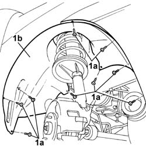

7055B42 Additional FRONT WHEEL ARCH (one), left or right - R.R.
- Path
- Procedures > 70 FITTINGS > 7055 MOULDING AND PROTECTION > 7055B exterior protections > 7055B42 Additional FRONT WHEEL ARCH (one), left or right - R.R.
- Kind
- repair procedure (removal / refitting; the operation number is the code)
- Applies to
- all engines; all production periods
- Interactive page
- https://sloeber94.github.io/elrnDB-fDbl/en/#/2585219
Applies to: all engines; all production periods
 Removing
Removing
 Refitting
RefittingPlace the car on a lift.
Op. 4450B04 RIGHT FRONT WHEEL - R.R.
1. Undo the fixing bolts (1a) and remove the wheel arch (1b) from the housing.

Applies to: all engines; all production periods
Refitting
RemovingFit the wheel arch in its housing and secure it using the bolts.
Op. 4450B04 RIGHT FRONT WHEEL - R.R.
Remove the vehicle from the ramp.
Topics linked from this page (1)
Topics that link to this page (7)
- 0510A20 timing gear with belt drive - check - carry out operation with cam cover(s) removed and tappets adjusted
- 0510A30 cam lift - check with cam cover(s) removed
- 1004B10 POWER UNIT WITH MANUAL GEARBOX - R.R
- 2110A10 manual gearbox and differential - r + r
- 5050B22 front and rear screen washer pump - r+r
- 7055B90 LEFT FRONT WHEEL ARCH LINER - R.R.
- 7055B91 RIGHT FRONT WHEEL ARCH LINER - R.R.